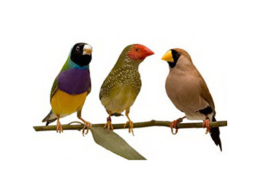

Кликом на слику рочитај више на националној географији
Путовање у Јужну Америку променило је његов поглед на свет, а касније и ток историје. Био је импресиониран занимљивим биљкама и животињама, па је сакупљао све што би пронашао – суве биљке, инсекте, камење и костуре животиња. Већину времена проводио је на копну истражујући геологију. Водио је детаљне белешке и записивао сва своја запажања, које је током путовања слао у Кембриџ, заједно са писмима својој породици. С обзиром да је имао површна знање о геологији, прикупљању буба и дисекцији морских бескичмењака то му је веома помогло да схвати само део оног што је видео.
Ипак, о осталим областима није имао никаква знања, па су његова сазнања требала стручну процену. Иако је патио од морске болести, на „Биглу“ је правио обилне белешке. Већина њих се односила на морске бескичмењаке. Када су стигли у Бразил, Дарвин је био одушевљен тропским шумама, али га је ропство потпуно разочарало. У Патагонији је пронашао кости великих изумрлих сисара поред морских шкољки, што га је довело до закључка да изумирање може да се деси и без драстичне промене климе или неке природне катастрофе.
Његова запажања изазвала су велики интерес у Енглеској. Путујући унутрашњошћу Јужне Америке упознао је домородачка племена, а двојицу мушкараца је касније повео у Енглеску где су се образовали као мисионари. Иако су их многи научници гледали као дивљаке, Дарвин је веровао да резлика између цивилизација и култура није непремостив. Штавише, веровао је да упркос различитостима, не постоји нешто непремостиво између људи и животиња. Његови јужноамерички пријатељи ипак нису имали жељу да остану у Енглеској него су одлучили да се врате у домовину и наставили да живе као и до тада.
Док је боравио на Галапагосу посматрао је велике корњаче, игуане и зебе. Све их је сакупио у једну врећу, али није забележио где их је пронашао. Вративши се у Енглеску своју колекцију показао је познаваоцу птица који је био изненађен јер Дарвин није знао којој врсти припадају ни где их је тачно пронашао. Иако је ово била грешка, човечанство му је морало опростити јер је био на трагу светског открића. У Кејптауну, у Јужноафричкој Републици, упознао је енглеског математичара, астронома, хемичара и проналазача Џона Хершела. Он је дошао до открића да изумрле врсте с временом „наследе“ неке нове врсте што је бацило сасвим ново светло на изучавања о пореклу врста. Док се враћао у Енглеску Дарвин је интензивно размишљао о свему што је видео на овом занимљивом путовању, а највише су га заинтригирале зебе које ће касније бити пресудне за његова даља истраживања.
Када се 2. октробра 1836. године вратио у Енглеску већ је био велика звезда међу научницима. Свештеник, ботаничар и биолог Џон Стивенс Хенслов, Дарвинов бивши професор са Кембриџа потрудио се да научни кругови сазнају за нова открића његовог штићеника. Он му је саветовао да пронађе природњаке који би могли да направе збирку ботаничких узорака које је Дарвин донео у Енглеску.
Крајем 1936. године Дарвин је написао свој први рад у коме је изнео тезу да се тло Јужне Америке постепено подиже, што је наишло на одушевљење у Геолошком друштву у Лондону. Већ у јануару 1937. године представио је своја биолошка открића Зоолошком друштву. Орнитолог Џон Гоулд (Јохн Гоулд) објавио је да су птице са Галапагоса које је Дарвин пронашао и сматрао мешавином птичијих врста, заправо биле дванаест потпуно различитих врста зеба. 17. фебруара 1937. године Дарвин је примљен у Савет Геолошког друштва. Како се касније испоставило, проучавање различитих врста зеба било је пресудно за Дарвинова открића. Наиме, све зебе које је донео са Галапагоса изгледале су различито. Неке су имале дебели кљун који им је помагао да сакупљају семенке. Друге су имале дуг и танак кљун са којима су могле да купе храну из цвећа. Закључио је да се исте врсте птица могу прилагођавати условима окружења у коме се налазе. Током 1937. године започео је низ пројеката. Између осталог, одлучио је да заједно са Хенсловом објави књигу у којој ће сажети сва открића са путовања око света.Осим тога, писао је радове о геологији.
